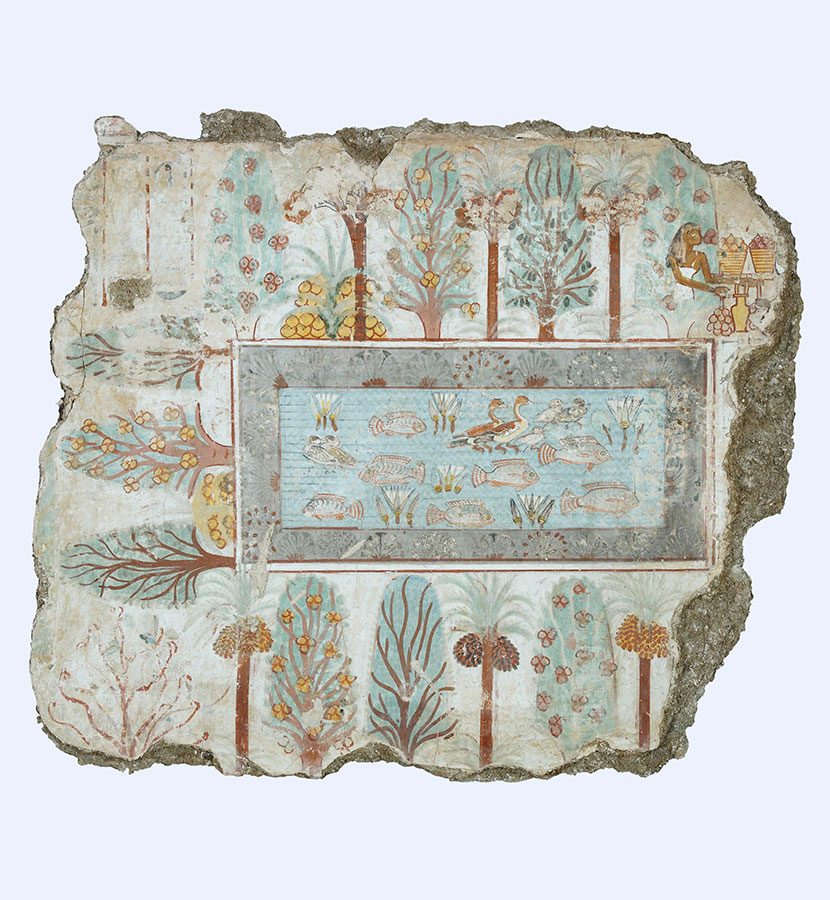

Egyptian Garden Design
Gardens belonged to the Pharoes of Egypt around 1000 BC. These were grandiose geometric layouts that had pools encircled with palm trees. They were displays of power, status, and protected by desert walls. Gardens were very costly to build and were predominately in royal palaces, wealthy households, and religous temples, as archeaolgical remains suggest.
Palms, Sycomores, Mandrakes and hedges around pools with fish in an estate garden of the Tomb of Nebamun.
Egyptian Garden Design — Gardens of the Pharaohs
Ancient Egyptian gardens were carefully designed landscapes that combined **beauty, order, symbolism, agriculture, and water management**. By around **1000 BC**, formal gardens had become important features of royal estates, wealthy residences, temples, and other important properties. In a landscape dominated by desert, the cultivated garden represented an extraordinary achievement: a controlled oasis of shade, water, flowers, fruit, and greenery. These gardens were not simply ornamental. They demonstrated the owner's **wealth, authority, sophistication, and ability to command the resources necessary to transform an arid environment into a flourishing landscape**. The larger and more elaborate the garden, the greater the statement of status.
Geometry and Order
Egyptian gardens were generally organized according to strong **geometric principles**. Rectangular pools, straight pathways, symmetrical planting beds, rows of trees, and carefully enclosed garden rooms created a sense of order and permanence. The garden was frequently surrounded by **high walls**, which served several purposes. Walls protected the cultivated landscape from the harsh desert environment, provided privacy, reduced exposure to wind and blowing sand, and created a controlled environment where valuable plants could be cultivated. Within these walls, the garden could be divided into distinct areas for:
* Ornamental planting
* Fruit trees
* Shade trees
* Pools and water gardens* Vegetable and herb cultivation
* Sacred or ceremonial planting
* Walking paths and shaded areas
The resulting landscape was essentially a **constructed oasis**, carefully separated from the surrounding desert.
Water as the Heart of the Garden
Water was perhaps the most important element of the Egyptian garden. In an environment where rainfall was scarce and the annual flooding of the Nile shaped agricultural life, water represented life, fertility, prosperity, and abundance. Formal rectangular pools were often positioned as the central feature of an estate garden. They could be surrounded by trees and flowering plants and were sometimes stocked with fish. Water also provided a cooling environment and reflected the surrounding vegetation, architecture, and sky. The pools were more than decorative features. They were part of the sophisticated relationship between **irrigation, agriculture, and landscape design** that allowed Egyptians to cultivate plants in an otherwise arid environment.
Palms, Sycamores and Garden Trees
Trees were highly valued because they provided something precious in the Egyptian climate: shade. Palms were particularly important and could be planted in orderly rows around pools, paths, and courtyards. Their tall trunks and distinctive crowns created a strong vertical element within the otherwise geometric garden. Sycamore trees were also associated with Egyptian gardens and had cultural and religious significance. Their broad canopies provided substantial shade and made them particularly valuable around residential and sacred landscapes. Other cultivated trees and plants could provide fruit, fragrance, food, medicine, shade, and ornamental interest. The garden therefore operated simultaneously as a pleasure garden, productive landscape, and symbolic environment.Flowers, Fragrance and the Sacred Landscape
Egyptian gardens incorporated plants valued for their beauty and fragrance. **Lotus and water plants** were especially significant because of their association with the Nile and Egyptian religious symbolism. Fragrant plants were important in an environment where scent could transform an enclosed garden into a sensory retreat. Flowers, aromatic foliage, and flowering trees contributed to an atmosphere of abundance. The garden was therefore experienced through more than sight. **Shade, cool water, fragrance, birds, fish, fruit, and flowers** all contributed to the pleasure of the landscape.
The Garden of Nebamun
One of the most evocative representations of an Egyptian garden appears in the Tomb of Nebamun, dating to the New Kingdom. The famous garden scene depicts an orderly estate landscape centered around a rectangular pool surrounded by vegetation. The pool is shown with **fish and waterfowl**, while trees and flowering plants are arranged around its perimeter. Palms and sycamores rise above the garden, creating layers of vegetation and shade. The composition gives us an important visual impression of how Egyptians imagined the ideal estate garden: **a carefully controlled world of water, trees, flowers, wildlife, and abundance enclosed within a formal landscape**. The painting should not be treated as a precise architectural plan; Egyptian tomb paintings often combined symbolic and visual conventions. Nevertheless, it provides valuable evidence for the plants, animals, water features, and idealized garden environments associated with elite Egyptian life.
Pools, Fish and Wildlife
The inclusion of fish and waterfowl transformed the formal pool into a miniature ecosystem. Fish represented the abundance of the Nile and added movement and life to an otherwise highly ordered landscape. Water gardens could contain aquatic plants such as lotu*, while birds and other animals were attracted to the water. The contrast between the still geometric pool and the movement of fish, birds, and foliage created a garden that was both controlled and alive.
Gardens as Symbols of Heirarchy
An Egyptian garden required considerable resources. Water had to be brought to the site, plants had to be cultivated and maintained, trees required years to mature, and gardeners and laborers were needed to care for the landscape. For this reason, a grand garden was itself a demonstration of wealth and social position. A royal garden could communicate the ability of the pharaoh or elite household to command land, water, labor, plants, and architectural resources. Temple gardens had an additional dimension. Plants, trees, water, and cultivated landscapes could contribute to religious ceremonies and the symbolic representation of fertility and renewal.
Egyptian Garden Design Principles
For a modern interpretation, the Egyptian garden can be understood through several defining principles:
1. Enclosure Use walls, hedges, or architectural boundaries to create a protected garden oasis.
2. Strong Geometry Favor rectangles, straight paths, symmetrical planting, and clearly defined garden rooms.
3. Central Water Make a rectangular reflecting pool, fountain, or water basin a dominant organizing feature.
4. Palms and Shade Trees Use palms and broad-canopied trees to create vertical structure and shade.
5. Formal Planting Arrange plants in orderly rows and geometric beds rather than loose naturalistic compositions.
6. Fragrance Incorporate highly fragrant flowering plants and herbs to create a sensory garden.
7. Water Plants Introduce lotus and other aquatic plants where appropriate.
8. Productive Planting** Combine ornamental planting with fruit trees, herbs, vegetables, and useful plants.
9. Reflection and Symbolism Use water as both a practical resource and a visual representation of abundance and life.
10. The Oasis Principle The entire garden should feel like a cultivated sanctuary—a lush, protected world contrasting dramatically with the surrounding dry landscape.
Egyptian Garden Design in the Okanagan For an **Okanagan interpretation of Egyptian garden design**, the historical principles can be translated rather than literally reproduced. A strong geometric courtyard surrounded by stone or stucco walls could contain a rectangular reflecting pool, clipped hedges, formal paths, palms or palm-like architectural plants where hardy, and drought-tolerant trees and shrubs. The design could emphasize the dramatic contrast between **stone, water, shade, and luxuriant planting**, recreating the ancient Egyptian idea of the garden as a protected oasis. The essence of Egyptian garden design is therefore not simply the presence of palms and pools. It is the creation of a **formal, enclosed oasis where water, vegetation, architecture, and symbolism are brought together to express life and abundance within an arid landscape**.
